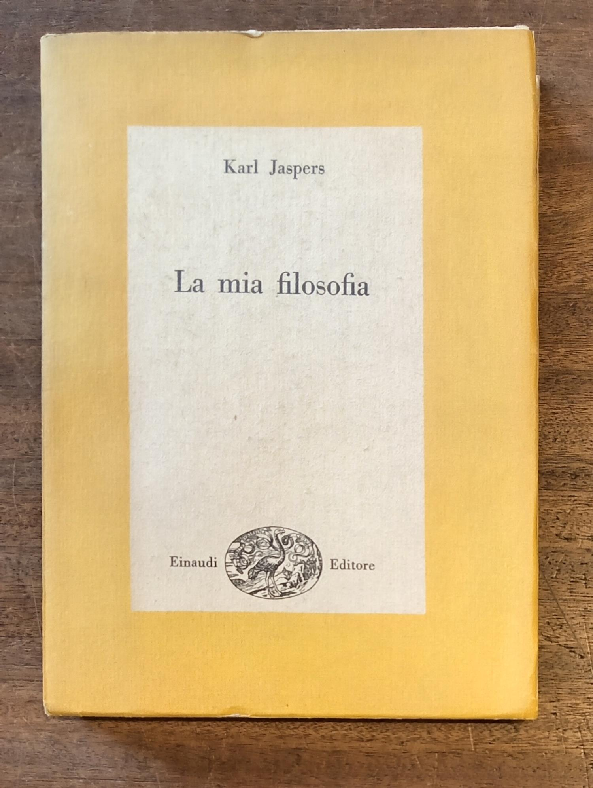
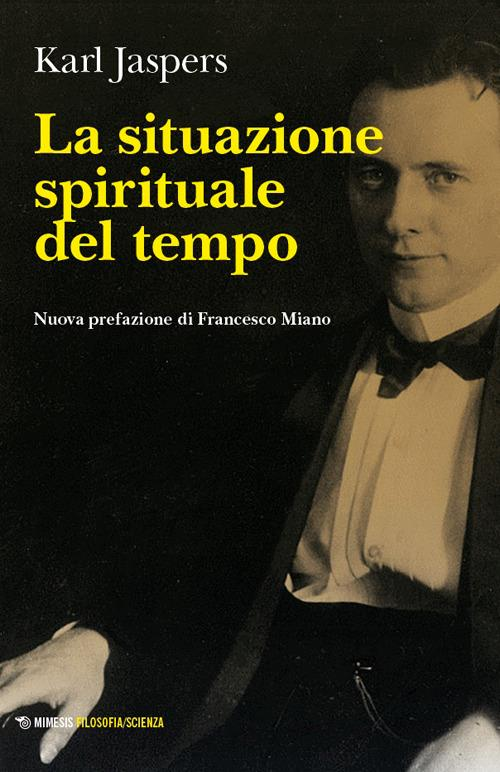
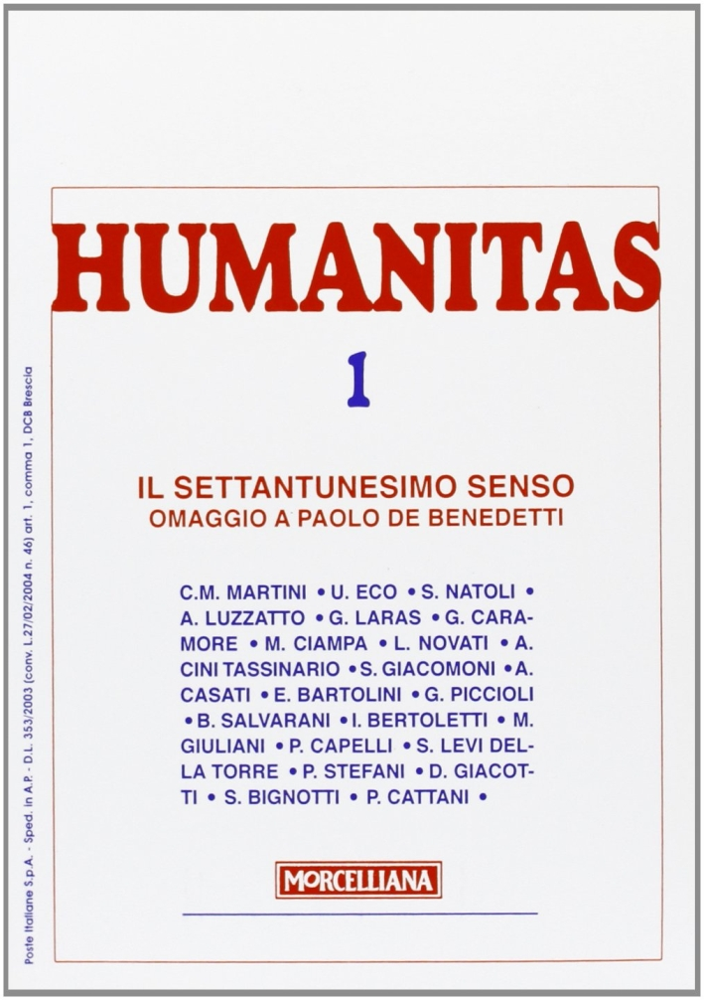

45:22 · 6 OPERE
Karl Jaspers, Il sofista.
Il filo del discorso
Il relatore legge e commenta passi del Sofista di Karl Jaspers per discutere un uso del pensiero orientato alla convenienza anziché alla conoscenza. L’introduzione colloca il testo nella crisi europea del Novecento e richiama il legame fra società di massa e solitudine. La lettura procede per nuclei: la figura sfuggente che evita un conflitto autentico, la ricerca di favori, la sottomissione al forte e la durezza verso il debole, la possibilità di cambiare opinione senza responsabilità. Gli esempi contemporanei, compreso il racconto di un incontro con una persona ricca, sono interventi del relatore sul testo. La parte centrale oppone alla riduzione delle persone a mezzi il valore irripetibile di ogni vita, attraverso una massima rabbinica e il settantunesimo senso ricordato da Paolo De Benedetti. La conclusione difende il contraddittorio, la correzione e una conoscenza che resta aperta. La scheda distingue il brano e le raccolte che lo contengono, le parole lette e le interpretazioni, i riferimenti verificabili e gli aneddoti senza fonte precisa.
I libri nel discorso

Il sofista
Copertina della raccolta La mia filosofia, Einaudi 1946: Copertina della raccolta La mia filosofia, Torino, Einaudi, Biblioteca di cultura filosofica 4, 1946, XII–279 pagine, a cura di Renato De Rosa. Il sofista occupa le pagine 105–108 secondo la bibliografia della Fondazione Jaspers. La fotografia non raffigura un libro autonomo intitolato Il sofista; nessun ISBN attribuito alla tiratura del 1946.
Fotografia autentica della raccolta che contiene il brano; non si usa la diversa opera omonima di Raffaello Cortina né si identifica l’esemplare del relatore.
Titolo e autore annunciati; lettura di passi scelti. Si registra il brano, distinto dalla raccolta e dal volume originario.
Passaggio 0:03 ↗ · Fonti e libro ↗
La situazione spirituale del tempo (Die geistige Situation der Zeit)
Copertina: Opera originaria del 1931. Immagine della nuova edizione Mimesis, Filosofia/Scienza 45, 2026, ISBN 9791222310633, traduzione di Nicola De Domenico e nuova prefazione di Francesco Miano. Edizione successiva al video, che nel parlato si colloca nel 2017; non è attribuita al relatore. La edizione italiana Jouvence del 1982 è distinta dalla raccolta Einaudi 1946.
Immagine autentica dell’opera, controllata visivamente; l’edizione di riferimento non è attribuita al filmato.
Titolo tedesco e anno 1931 espliciti come opera di provenienza.
Passaggio 0:27 ↗ · Fonti e libro ↗
The Decay and Restoration of Civilization
Identificazione probabile
Copertina della raccolta: Prometheus · The Philosophy of Civilization · 1987 · raccolta in inglese
Copertina della raccolta Prometheus del 1987 che contiene The Decay and Restoration of Civilization e Civilization and Ethics. I due saggi, originariamente distinti, restano voci separate. L’edizione in inglese dell’immagine non è attribuita al video.
Declino della cultura, Schweitzer e memoria della traduzione italiana: collegamento probabile al primo saggio di Kulturphilosophie.
Passaggio 4:16 ↗ · Fonti e libro ↗
Dialettica dell’illuminismo
Copertina: Einaudi, Piccola Biblioteca Einaudi, 2010
Edizione illustrativa dell'opera, con traduzione di Renato Solmi e introduzione di Carlo Galli; non identificata nel video.
Titolo e autori espliciti; prefatore criticato senza identificazione certa.
Passaggio 5:12 ↗ · Fonti e libro ↗
Schindler’s List
Manifesto cinematografico ufficiale Amblin: Film statunitense del 1993, Amblin / Universal, regia di Steven Spielberg. Manifesto ufficiale conservato nella pagina Amblin, con titolo, nome del regista e crediti; non copertina del romanzo né della edizione DVD.
Manifesto autentico del film, con mani e lista di nomi. La voce riguarda il film esplicitamente richiamato.
Titolo del film nominato nel ricordo della massima sulla vita; non viene aggiunto il romanzo non citato.
Passaggio 23:33 ↗ · Fonti e libro ↗
Il settantunesimo senso. Omaggio a Paolo De Benedetti
Identificazione probabile
Copertina del fascicolo Humanitas 1/2006: Humanitas, nuova serie, anno LXI, numero 1, gennaio–febbraio 2006, Brescia, Morcelliana, 192 pagine nel fascicolo commerciale, ISBN 9788837220891. La sezione omaggio è registrata dai curatori alle pagine 4–143. La copertina specifica riporta titolo, numero e nomi dei contributori; il segnaposto IBS è stato respinto.
Copertina autentica del fascicolo monografico, non un libro d’autore di Paolo De Benedetti. Identificazione della citazione dichiarata probabile.
Titolo e De Benedetti nominati, ma autore e natura della pubblicazione ricordati in modo impreciso: probabile fascicolo di omaggio del 2006.
Passaggio 23:50 ↗ · Fonti e libro ↗Minutaggi ricavati da testi automatici, da riascoltare. Le identificazioni probabili sono segnalate accanto ai libri.